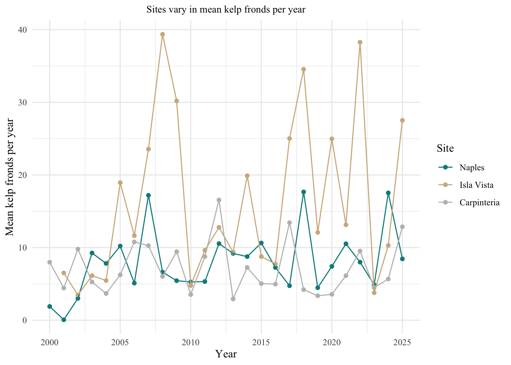
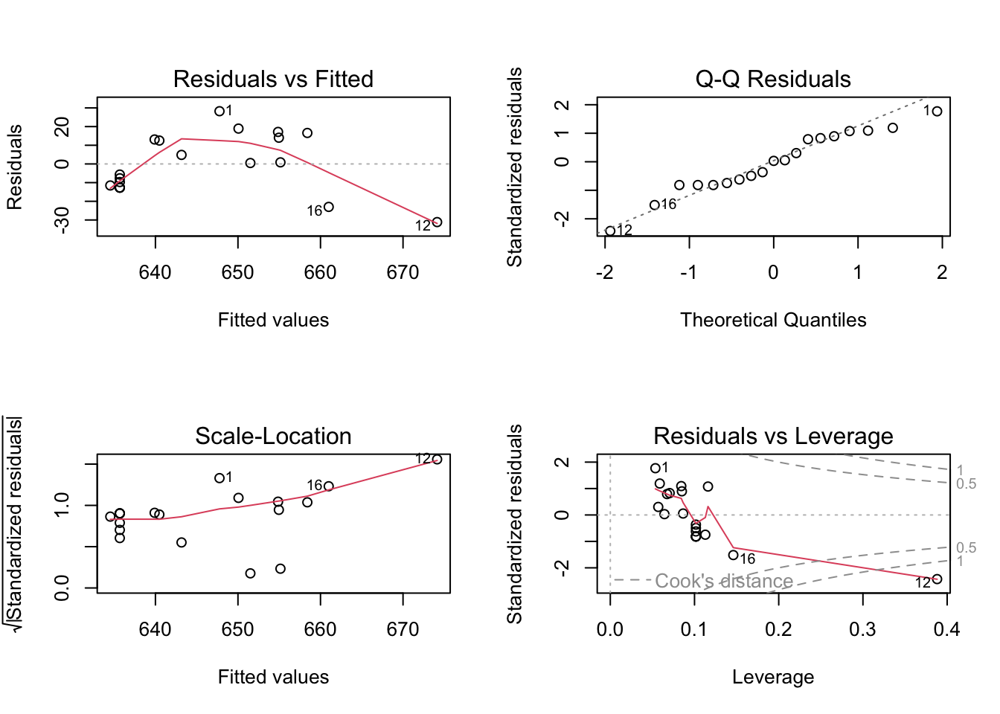
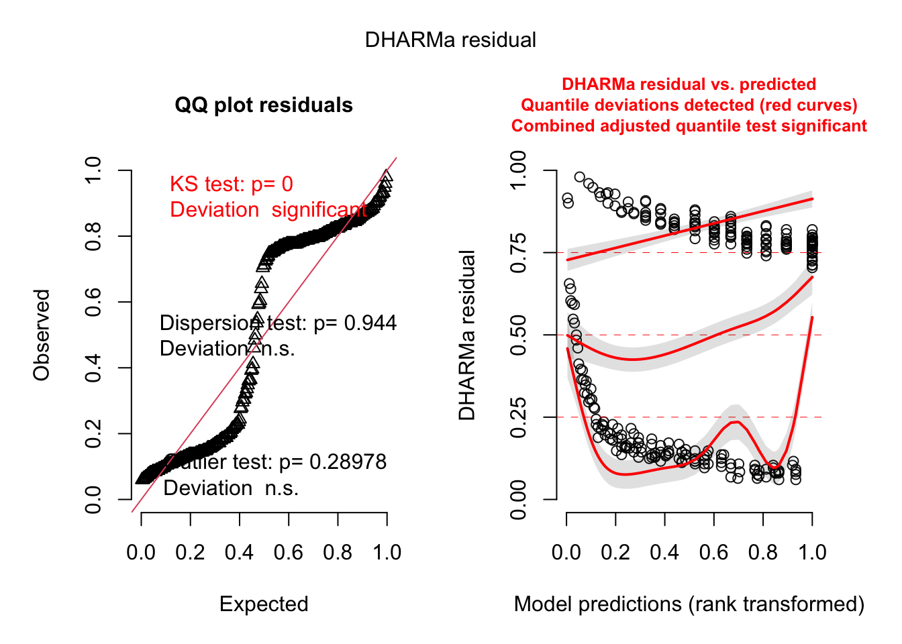

#read in packages from library
library(tidyverse)
library(here)
library(janitor)
library(readxl)
library(tidyverse)
library(dplyr)
library(readr)
library(ggeffects)
#read in data from data folder
kelp <- read.csv("~/Desktop/ENVS 193DS/git/Final/ENVS-193DS_winter-2026_final/data/Annual_Kelp_All_Years_20250903.csv")
Personal <- read_csv("~/Desktop/ENVS 193DS/git/Final/ENVS-193DS_winter-2026_final/data/My Data ES 193 - Sheet1.csv")Final
Problem 1. Research Writing
a. Transparent statistical methods
In part 1, they used a simple linear regression to determine whether precipitation predicts flooded wetland area (testing the relationship between a continuous predictor and a continuous response).
In part 2, they used an analysis of variance (ANOVA) to test whether the median flooded wetland area differs among the five water year classifications (wet, above normal, below normal, dry, critical drought).
b. Figure needed
My coworker could make a box plot to accompany the statement in part 2 by visually showing the audience how similar the medians across all five water classifications are. On the x-axis would be water year classification: wet, above normal, below normal, dry, critical drought, and on the y-axis would be flooded wetland area displaying the median as well as quantiles and range.
c. Suggestions for rewriting
Part 1: Flooded wetland area did not show a significant relationship with precipitation. (Linear regression: F() = unknown, r2 = unknown, p = 0.11, \(\alpha\) = significance level).
Part 2: Median flooded wetland area appeared similar across the five water year classifications (wet, above normal, below normal, dry, critical drought), indicating that flooding does not differ substantially among these conditions. (ANOVA: F() = unknown, p = 0.12, \(\alpha\) = significance level).
d. Interpretation
One additional variable that could influence the flooded area of wetlands would be management practices on each of the 198 land-owner parcels. This would be a categorical variable listing each parcel as something along the lines of (purposefully flooded, naturally flooded) to delineate if there was artificial flooding during critical breeding periods.
Problem 2. Data visualization
a. cleaning and summarizing
kelp_clean <- kelp %>%
clean_names() %>% #change the names of columns to remove spaces and capital letters
filter(site %in% c("IVEE", "NAPL", "CARP")) %>% #filter the data to only include these 3 sites
filter(!(date == "2000-09-22" & transect == "6" & quad == "40")) %>% #filter out the data from date of 2000-09-22, transect 6 and quadrant 40
mutate(site_name = case_when( # adding a column called site_name change the names of sites to be full name
site == "NAPL" ~ "Naples",
site == "IVEE" ~ "Isla Vista",
site == "CARP" ~ "Carpinteria"
)) %>%
mutate(site_name = as_factor(site_name),
site_name = fct_relevel(site_name,
"Naples", "Isla Vista", "Carpinteria")) %>% # making sure categorical variables are treated as factors and setting level order
group_by(site_name, year) %>% #group the data by site_name and year
summarize(mean_fronds = mean(fronds)) %>% #calculate the mean number of fronds in each group we just created
ungroup() #ungroup the data after calculating the mean `summarise()` has regrouped the output.
ℹ Summaries were computed grouped by site_name and year.
ℹ Output is grouped by site_name.
ℹ Use `summarise(.groups = "drop_last")` to silence this message.
ℹ Use `summarise(.by = c(site_name, year))` for per-operation grouping
(`?dplyr::dplyr_by`) instead.slice_sample(kelp_clean, n = 5) # A tibble: 5 × 3
site_name year mean_fronds
<fct> <int> <dbl>
1 Naples 2003 9.26
2 Isla Vista 2007 23.6
3 Carpinteria 2011 8.75
4 Naples 2017 4.74
5 Carpinteria 2023 4.50str(kelp_clean)tibble [77 × 3] (S3: tbl_df/tbl/data.frame)
$ site_name : Factor w/ 3 levels "Naples","Isla Vista",..: 1 1 1 1 1 1 1 1 1 1 ...
$ year : int [1:77] 2000 2001 2002 2003 2004 2005 2006 2007 2008 2009 ...
$ mean_fronds: num [1:77] 1.8947 0.0606 3.0111 9.2596 7.8141 ...b. Understanding the data
The number for the value of fronds in this filtered line is -9999, representing a missing datasheet for that transect and quadrant. This information was found in the kelp data sheet on line 73, specified in the notes column.
c. Visualiza the data
ggplot(data = kelp_clean, # used clean data
aes(x = year, # make x-axis the date
y = mean_fronds, # make the y axis mean frond count
color = site_name)) +
geom_point() +# assign color base
geom_line() + # create a line between individual points
scale_color_manual(values = c("Isla Vista" = "tan", #color each site specifically
"Naples" = "darkcyan",
"Carpinteria" = "gray")) +
labs(x = "Year", # label x-axis
y = "Mean kelp fronds per year", # label y -axis
color = "Site", # assign color by site
title = "Sites vary in mean kelp fronds per year") + #Make Title the same as the example
theme_minimal() + #use theme with blank background
theme(text = element_text(family = "times new roman"),
plot.title = element_text(hjust = 0.5, # make plot title to the left of figure
size = 10)) # size small enough to fit on page
d. Interpretation
Isla Vista has the most variable kelp fronds per year showing the highest peaks in the mid 2000’s, mid 2010’s and around 2021, while also maintaining similar lows across all 3 sites showing high fluctuation. Carpinteria tends to have the least variable fronds per year remaining mostly in between the peaks and lows of Naples and Isla Vista with some lower periods around 2020 but no incredibly high years.
Problem 4. Affective and exploratory visualizations
a. Comparing visualizations
How are the visualizations different from each other in the way you have represented your data?
In my exploratory analysis I only compared 1 variable at a time, however in my affective visualization I chose to represent a multitude of variables.
What similarities do you see between all your visualizations?
I see a similar trend between all my visuals in my data showing a kind of scattered distribution with a possible linear trend, as mileage increases.
What patterns (e.g. differences in means/counts/proportions/medians, trends through time, relationships between variables) do you see in each visualization? Are these different between visualizations? If so, why? If not, why not?
I see a possible parabolic trend of my data through the distances that I ran. From 0- 4 miles my paces seemed to increase but then above that I seem to have possibly rounded a bend and gotten quicker. However It could also potentially be a linear trend with some outliers as I have only done a few longer distance runs. This trend is shown both in my exploratory and affective visualization, but my other exploratory visualization was based off of a categorical variable and it doesn’t show any explicit trends other than running tended to be the most frequent workout type.
What kinds of feedback did you get during week 9 in workshop or from the instructors? How did you implement or try those suggestions? If you tried and kept those suggestions, explain how and why; if not, explain why not.
During week 9 the feedback I got from my peer reviewers was to increase detail on the foreground of my visualization, potentially using the location where I always run as a sort of nature landscape, and I implemented those suggestions into my painting. I did not receive any feedback on including additional variables or really structurally changing the work on my index card feedbacks.
b. Designing an analysis
One analysis that I could apply to my research question is a linear regression. This is appropriate for my question because I would assume that especially as a beginner runner my pace would slow with the addition of miles and I am interested to test if that assumption is true. Additionally both of my variables are continuous.
c. Check any assumptions and run an analysis
run analysis
personal_clean <- clean_names(Personal) #clean the names of personal data to only include lower case and remove spaces
running_data <- personal_clean %>% #use to personal_clean data and filter to only include rows with the workout type equal to running
filter(workout_type == "Running") #filter the data to only include running observations
running_model <- lm(as.numeric(pace) ~ distance_mi, #use pace as dependent and milage as predictor
data = running_data) #select from filtered data set
summary(running_model) #display summary
Call:
lm(formula = as.numeric(pace) ~ distance_mi, data = running_data)
Residuals:
Min 1Q Median 3Q Max
-31.1319 -12.1076 0.4964 13.5715 28.2359
Coefficients:
Estimate Std. Error t value Pr(>|t|)
(Intercept) 616.506 10.854 56.800 < 2e-16 ***
distance_mi 9.588 3.275 2.928 0.00939 **
---
Signif. codes: 0 '***' 0.001 '**' 0.01 '*' 0.05 '.' 0.1 ' ' 1
Residual standard error: 16.4 on 17 degrees of freedom
Multiple R-squared: 0.3352, Adjusted R-squared: 0.2961
F-statistic: 8.573 on 1 and 17 DF, p-value: 0.009388check assumptions
par(mfrow = c(2,2)) #show plots in 2 by 2 grid
plot(running_model) #create diagnostic plots for our running model
d. Create a visualization
running_preds <- ggpredict(running_model, terms = "distance_mi")
ggplot(data = running_data,
aes(x = distance_mi,
y = pace)) +
geom_point(color = "darkcyan") +
geom_ribbon(data = running_preds,
aes(x = x,
y = predicted,
ymin = conf.low,
ymax = conf.high),
alpha = 0.1,
color = "orange") +
geom_line(data = running_preds,
aes(x = x,
y = predicted),
linewidth = 1) +
labs(x = "Distance (mi)",
y = "Pace (hr:mm:ss)") +
theme_minimal()
e. Write a caption
Figure 1. Linear regression of running vs. pace with 95% confidence interval Blue dots represent underlying data of average pace for duration of run. Orange lines outlining ribbon represent the upper and lower confidence interval for predicted linear relationship. Black line represents predicted linear equation. Data was collected by Author and access via CSV download.
f. Write about your results
The pace increased as distance increased (linear regression: F(1,17) = 8.573, R2 = 0.3, p = 0.009, \(\alpha\) = 0.05) Based on model predictions for every 1 unit increase in distance we expect to see an increase in pace of 9.6 seconds +/- 3.3 seconds. While the model did show significance the R2 being 0.3 means that not much of the variation in the model was explained by a linear regression.
g. Sharing affective visualization
In class!